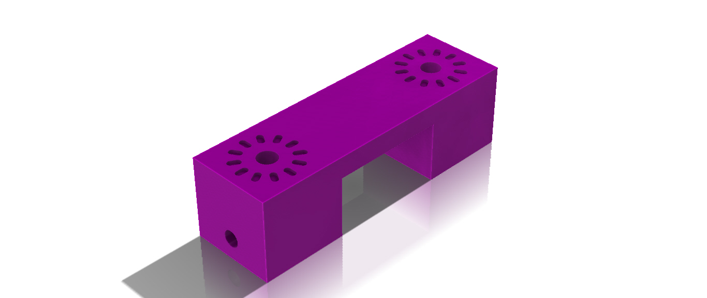
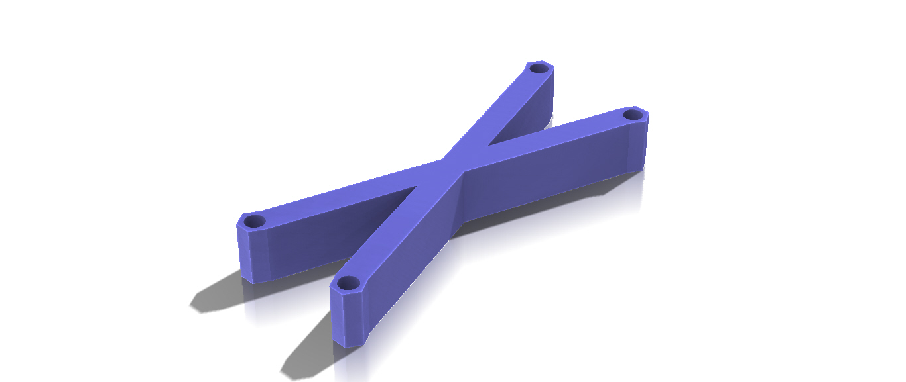

Camera Slider
Description
The Camera slider is a mechanism used to take smooth dolly shots. This smoothness has been made possible using ball bearings which allow the seamless motion. This mechanism eleminates any agitations that would be caused by jagged human interaction and produce professional dolly shots. Moreover, this system can be customized to fit different purposes by modifying the lengths of the aluminum extrusions.

Objective
The objective of this project was to design a multifunctional slider which can capture smooth dolly shots and time-lapses during 3D prints without integrating the motion of the bed into shot.
Challanges
- The slider's height.
- The slider's weight.
- The slider's height
-
One of the major challenges that were encountered during this project was the capability of adjusting the height of the slider. This feature is essential so that the slider can be fused to different 3D printers and in different conditions. This was resolved by using a multiangular fixed joint that securely fixes the slider legs in position.
 - The slider's weight
-
Moreover, since the ball bearings where mounted on the sides of the aluminum extrusions and due to the weight of the camera, the possibility of the slider slipping through the aluminum chamfers was aloft. This was solved by connecting alternating bearing axes in order to firmly hold the bearings in the aluminum chamfers.

Main Components
| Name | Function |
|---|---|
| Slider | Mounting the camera gimbal |
| End Caps | Adjusting the distance between the aluminum extrusions |
| Legs | Elevating and adjusting the height of the slider from the surface |
| Connection arm | Connecting the slider to the bed of the 3D printer |